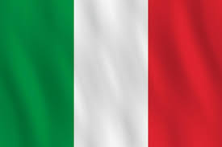
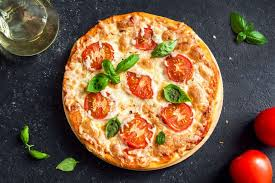
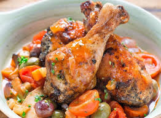
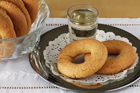
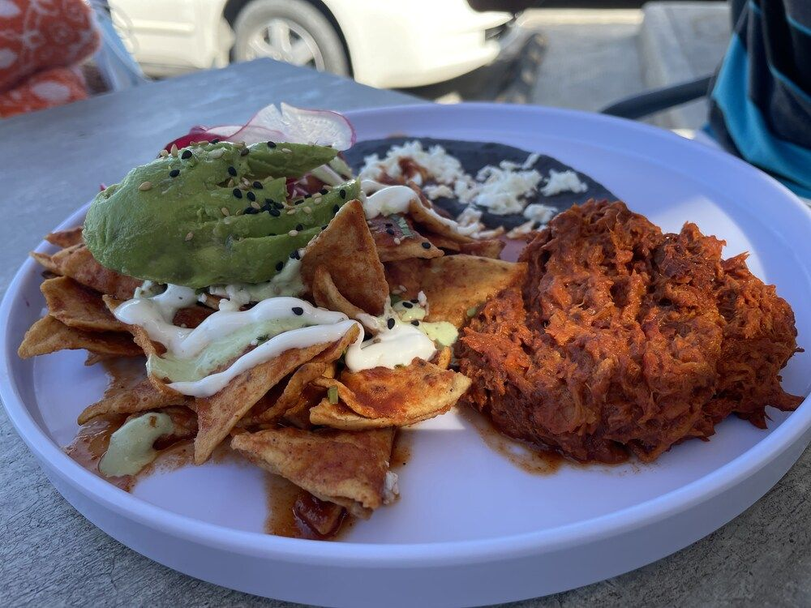
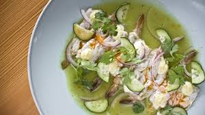
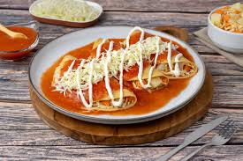

Comida Italiana
Pizza Margherita
Para la pizza margherita El tomate, la mozzarella y la albahaca son los ingredientes principales. Emula la bandera de Italia y al estar presente todas las pizzerias es una buena candidata al plato tradicional de Italia.
Pollo alla Cacciatora
El pollo alla cacciatora o a la cazadora es un segundo plato de tradición toscana, muy conocido y apreciado en Italia, especialmente en el norte del país. Esta receta es fácil de preparar y muy sabrosa gracias a la presencia de ingredientes llenos de sabor, tales como ajo, tomate y vino tinto, que realzan este tipo de carne.
Roscos Bussolà Buranelli
Los roscos bussolà buranelli son unas galletas crujientes con gran aroma a limón y vainilla, deliciosas para tomar con el café después de comer o a la hora de la merienda. Aguantan muy bien varios días en un recipiente hermético.
Comida Mexicana

Chilaquiles
El desayuno mexicano por excelencia son los chilaquiles. Se ponen totopos (pequeñas tortillas triangulares de maíz) cubiertos por salsa picante hecha con chile rojo o verde. Por encima se añade crema agria, cebolla, queso y huevos. Se pueden poner muchos otros ingredientes para hacer variaciones del plato: chorizo, carne, aguacate, frijoles… Como puedes ver, es un plato muy contundente que te dejará saciado durante horas antes de almorzar.
Aguachile
Como has podido comprobar, la mayoría de comida típica de México lleva carne. El aguachile, en cambio, está hecho con camarones crudos, cebolla roja, jalapeño y cilantro. Es una especie de ceviche muy típico en las zonas de costa mexicanas.
Enchiladas
Otro platillo mexicano muy conocido en el resto del mundo son las enchiladas. Son tortillas de maíz enrolladas bañadas en salsa y rellenas de cualquier tipo de carne. Se acompañan con lechuga, cebolla, lima y cilantro. Todos ellos son ingredientes muy usados en la gastronomía mexicana. De hecho, las enchiladas son prácticamente otra forma de comer tacos, con la gran diferencia que van bien empapadas de salsa.
